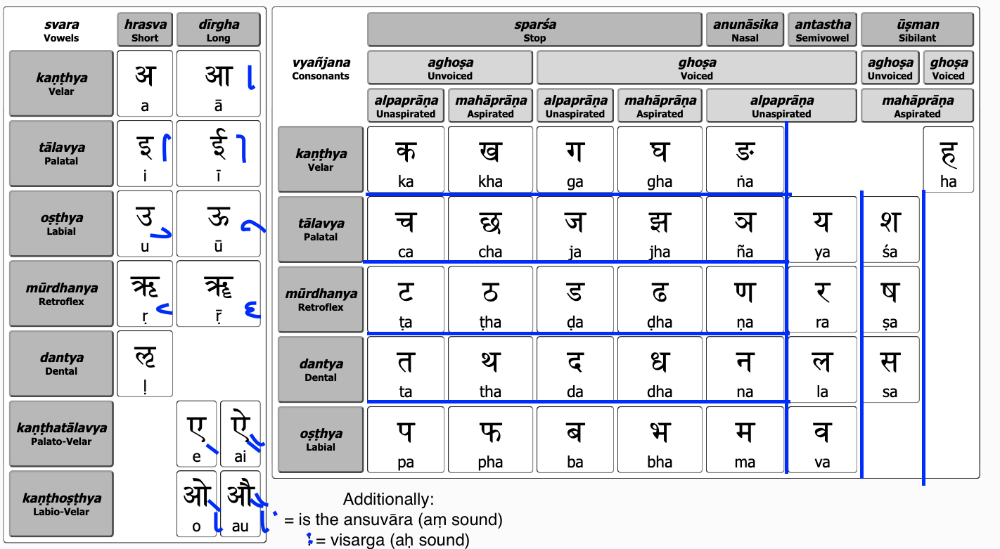

Notes on Sanskrit
Background
This document is a work in progress. Last updated: Nov 3rd 2020
People learn Sanskrit primarily in 2 different ways:
1. An organic “jump into the water” approach via Samskrita Bharati or any teacher that emphasizes speaking and understanding/listening first. Which is secondary to reading and writing (though you learn that too). Just as a baby knows no language: parents will speak to the child and the child will learn the language on their own without knowing the rules of grammar/technical stuff.
2. An academic approach usually in a college setting where every part of the language is learned and built up from scratch. Usually learning this way means you won't be able to speak it much but will be able to translate and read texts (though both approaches are not mutually exclusive)
Also in India and Germany schools do teach Sanskrit as a language elective but everyone I know that has taken that does not really know Sanskrit. This is similar to how in the US high school students take a forigen language (commonly: Spanish, French, and Italian etc.) but very few students come out actually knowing the language and are able to speak (which in itself is a big problem as to how these courses are designed and with which incentives students take them/forced to).
At the time of initially writing (June 2020) this I am learning the language with both approaches (1 and 2) simultaneously. I will have more opinions as to which is better for what after some more time.
Why learn Sanskrit (or not)?
This is an essay in itself. Please email if you would like to discuss. Also note you don't need to know an indic language as a prereq although it will certainly help if you do. You do not need to know how to read Devanāgari script as you (anyone) can learn.
Resources for learning
Using book: Devavāṇīpraveśikā: an Introduction to the Sanskrit Language, Goldman
Many of the images/charts I will screenshot are from their book. All credit goes to them.
Edwin Bryant’s lectures.
Sanskrit Bharati’s distance learning program.
Recommend making a personal dictionary to put vocabulary, translation, transliteration, and gender of words.
Links:
https://ubcsanskrit.ca/index.html
https://spokensanskrit.org/index.php
http://agniveer.com/learn-sanskrit-month-1/
Do you, reading this, have a favorite resource? Do tell.
Sanskrit Notes
Background
Sanskrit is written in Devanāgari script. Therefore it has an abugidas not an alphabet. That means the vowels are mixed with constants to create unique symbols that represent the sound.
Cognates: Linguistic term used to describe words that come from a common ancestor. For example:
Latin: māter, Sanskrit: मातृ mātr, English: mother.
Language origin: Indo-European
5 parts of the mouth to produce sound.
Every phonetic sound == one graphic symbol/character.
Sanskrit follows the “what you see is what you get” principle.
This is unlike English where multiple symbols can represent the same or different sounds (example: c and s) where there are alot of exceptions. For example if all you knew was the english alphabet you have an incredibly difficult time spelling the word "through" or “queue”. This is not the case for Sanskrit. Once you learn the script you can spell anything.
Script

Source: https://ubcsanskrit.ca/lesson1/devan%C4%81gar%C4%AB.html
svara = vowels
vyañjana = consonants
For the svara’s in blue are symbolic representations of when you use a svara’s sound with a consonant. Note it is uncommon to see the mūrdhanya vowels to be used with conants as well as the single dantya vowel.
Typically you memorize the 5 rows (kaṇṭha to oṣṭha) going up until the anunāsika character so 5 by 5. Then you learn the antastha column (ya, ra, la, va). Then your sa’s and ha. The reason this chart is arranged this way is because of Sandhi rules which will become clear later.
For the consonants each row going down is a class that is grouped together by what part of the mouth is used.
vargas - sets/class of consonants listed below (5)
- kaṇṭha (velum) for kaṇṭhya
- tālu (soft palate) for tālavya
- mūrdhan (hard palate) for mūrdhanya (retroflex the sound)
- danta (teeth) for dantya
- oṣṭha (lips) for oṣṭhya
For the consonants each column going across consonants are separated by articulations and if the sound is voiced or not.
sthāna - articulations parts of the mouth listed below
- sparśa: the sound stops
- anunāsika: the sound comes from the nose
- antaḥstha, or "in between" a vowel and a consonant
- ūṣman or sibilant (hissing sound)
Source: https://ubcsanskrit.ca/lesson2/pcvchart.html
Above illustrates when the constant ka is joined by vowels. To represent k sound without the implicit a sound the line under the constant is used like so \
Diacritics
Diacritics are symbols used in the Roman script to represent sounds not found native to the english language. This is so English readers can read the language in Roman script.
- a line above a character (-) elongates the sound: a -> ā
- a dot under a character (.) retroflex the sound: t -> ṭ
- a tilde above a character (~) <sound>: <>
- a flipped appochaphi character (‘) <sound>: <>